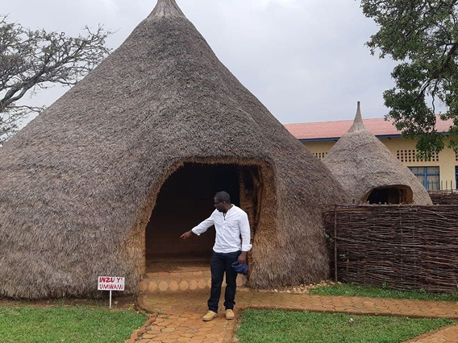
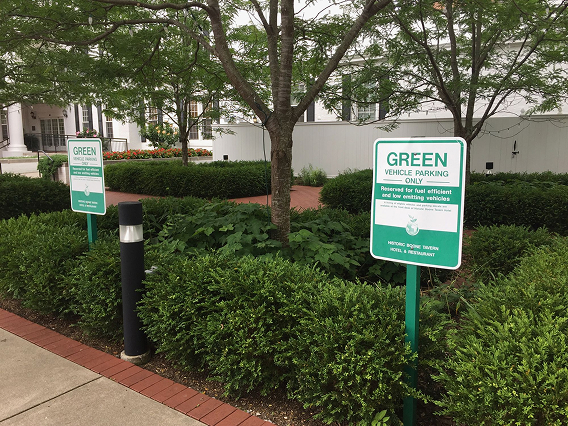
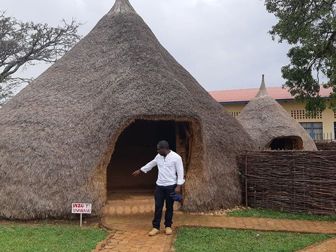
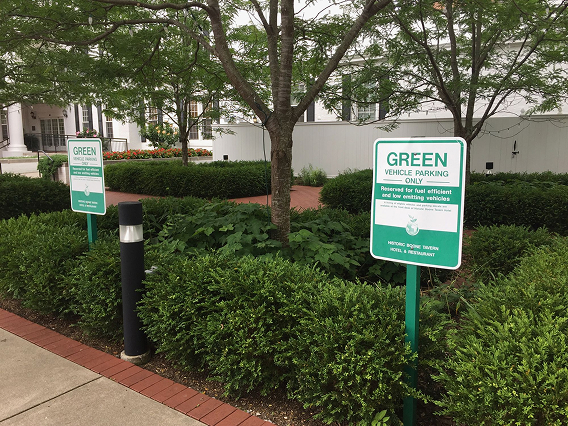

Criccieth, Gales
Steffan Warren, editor jefe
Kseniya Glagoleva, gerente de proyectos
Las ruinas medievales del castillo de Criccieth dominan la ciudad desde una roca que se extiende sobre el mar. Se cree que fue construido por Llewelyn el Grande en el siglo XIII. Ochocientos años después, la autodenominada Perla de Gales en las costas de Snowdonia se ha convertido en un popular destino turístico durante los meses de verano.
A pocos pasos de camino al castillo, puedes disfrutar de los mejores helados del mundo en Cadwalader's, cuyo ingrediente secreto se rumorea que son algas marinas de la localidad. Otra cosa por la que es famosa Criccieth es por haber ganado el premio Gales en flor durante cinco años seguidos por sus espectaculares muestras florales alrededor de la ciudad. También vio nacer a David Lloyd George, el único galés que ha sido Primer Ministro del Reino Unido.